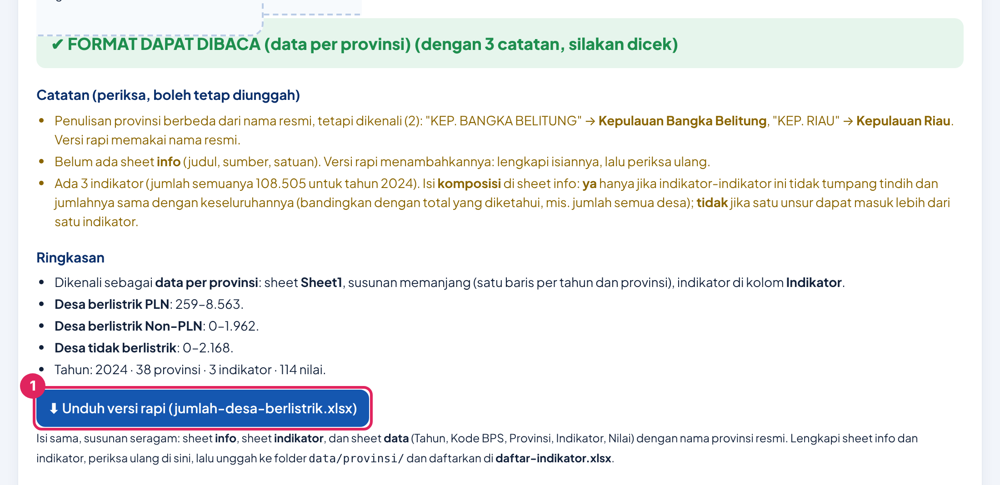
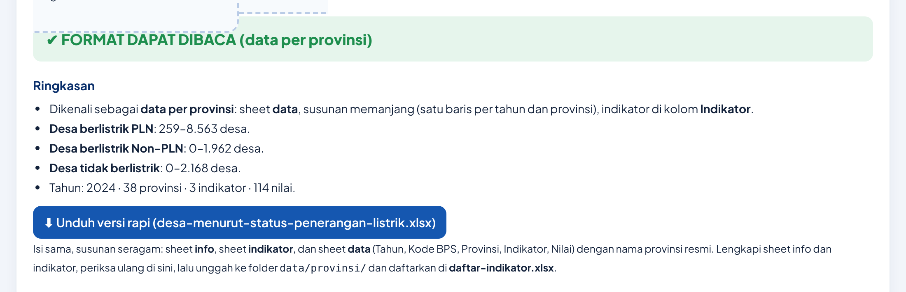
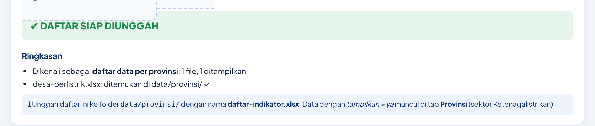
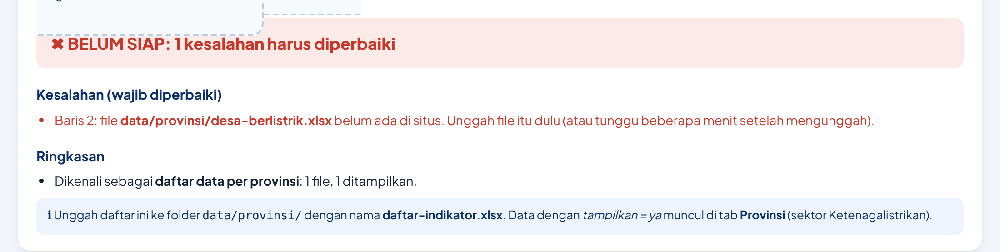
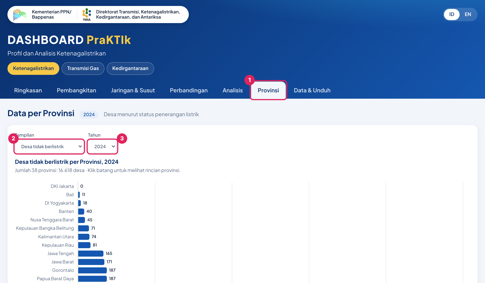
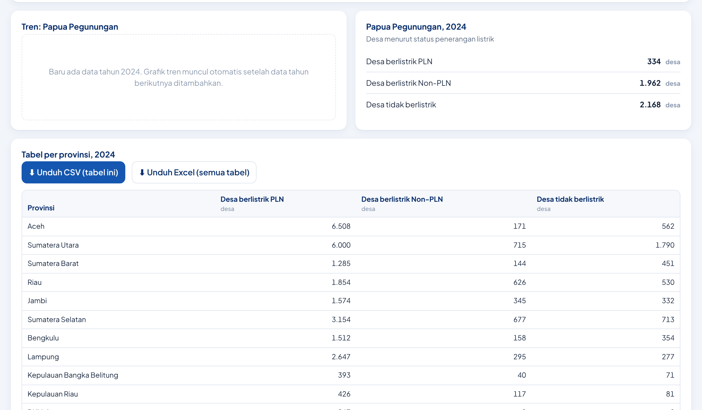

Kementerian PPN/Bappenas Direktorat Transmisi, Ketenagalistrikan, Kedirgantaraan, dan Antariksa
PANDUAN LANGKAH DEMI LANGKAH
Menambah Data per Provinsi
ke Dashboard PraKTIk
Contoh: Desa menurut status penerangan listrik (BPS)
Untuk staf yang baru pertama kali menambah data.
Waktu: ±45 menit · Tidak perlu kemampuan pemrograman
Versi 1.0 · November 2026
Sebelum Mulai
Panduan ini menuntun Anda menambahkan data baru per provinsi ke dashboard, dari file yang diunduh dari sumber (mis. BPS)
sampai tampil di tab Provinsi. Sebagai contoh dipakai data jumlah desa menurut status penerangan listrik, 2024.
Yang Anda perlukan
Microsoft Excel
Browser (Chrome atau Edge)
Akun GitHub yang sudah diundang ke organisasi CASE4id dengan akses Write (minta ke admin; lihat Buku Panduan Bab 5.4)
File data dari sumbernya (mis. tabel Excel dari bps.go.id)
Gambaran alur
Delapan langkah
1 Unduh data→2 Susun 4 kolom→3 Cek Data→4 Unduh versi rapi & lengkapi→5 Cek ulang→6 Unggah file data→7 Daftarkan→8 Tampil di dashboard
Istilah
Istilah
Arti
Indikator
Satu ukuran yang diamati, mis. "Desa berlistrik PLN". Satu file boleh berisi beberapa indikator.
Cek Data
Halaman untuk memeriksa file Excel sebelum diunggah: case4id.github.io/dashboard-case/cek-data.html (tautan Cek Data di bagian bawah dashboard). File tidak dikirim ke mana pun.
Versi rapi
File Excel siap pakai yang dibuat oleh Cek Data: sheet info, indikator, dan data.
Daftar data
File data/provinsi/daftar-indikator.xlsx berisi file mana saja yang ditampilkan di tab Provinsi.
Aman dicoba
Tidak ada yang tampil di dashboard sampai Langkah 7 selesai, dan setiap file di GitHub menyimpan riwayatnya. Jika ada yang salah,
versi sebelumnya dapat dikembalikan (Buku Panduan Bab 4.4).
1Unduh data dari sumbernya
Cari tabelnya di situs sumber, mis. bps.go.id → menu Statistik / Tabel → cari "desa listrik" → pilih tabel per provinsi.
Unduh dalam format Excel (.xlsx), bukan PDF.
Simpan file aslinya di folder kerja Anda tanpa diubah. Kerjakan langkah berikutnya pada salinannya.
Pahami arti datanya dulu
Baca judul tabel dan catatan kaki di file asli. Pada contoh ini, BPS mencatat desa menurut keberadaan keluarga pengguna listrik
PLN, non-PLN, dan bukan pengguna listrik. Satu desa dapat tercatat di lebih dari satu kategori. Hal ini penting di Langkah 4.
2Susun data menjadi empat kolom
Ini format standar untuk semua data per provinsi, dari sumber mana pun. Tabel dari BPS, kementerian, atau PLN berbeda-beda
bentuknya, jadi selalu susun ulang ke empat kolom: Tahun, Provinsi, Indikator, Nilai.
Satu baris = satu tahun, satu provinsi, satu indikator. Contoh (awal file):
A
B
C
D
1
Tahun
Provinsi
Indikator
Nilai
2
2024
ACEH
Desa berlistrik PLN
6508
3
2024
SUMATERA UTARA
Desa berlistrik PLN
6000
40
2024
ACEH
Desa berlistrik Non-PLN
171
115
2024
PAPUA PEGUNUNGAN
Desa tidak berlistrik
2168
Tidak perlu khawatir ✓
Yang perlu diperhatikan ✗
Huruf besar/kecil dan penulisan provinsi (ACEH, "Kep. Riau", "DIY")
Jangan menggabungkan sel (merge cells)
Urutan baris
Kolom Nilai hanya berisi angka (kosongkan jika tidak ada data)
Baris INDONESIA (nasional) boleh ada
Nama indikator ditulis persis sama di setiap baris dan setiap tahun
Dua cara menyusun ulang
Cara A · Salin-tempel (tabel kecil, mis. satu tahun, beberapa kategori)
Buat sheet baru dengan judul kolom Tahun, Provinsi, Indikator, Nilai.
Salin daftar 38 provinsi ke kolom B. Isi kolom A dengan tahunnya dan kolom C dengan nama indikator pertama (mis. "Desa berlistrik PLN").
Salin angka kategori pertama ke kolom D (Paste Special → Values, agar hanya angka yang tersalin).
Ulangi di bawahnya untuk kategori berikutnya: provinsi yang sama, nama indikator berikutnya, angkanya.
Cara B · Unpivot di Excel (tabel lebar: kategori atau tahun sebagai kolom)
Excel dapat membalik tabel lebar menjadi daftar panjang secara otomatis dengan Power Query (Microsoft 365 / Excel 2016 ke atas).
Provinsi
PLN
Non PLN
Tidak Ada
1
ACEH
6508
171
562
2
SUMATERA UTARA
6000
715
1790
Siapkan tabelnya: hapus baris judul di atas tabel, sehingga baris pertama berisi judul kolom (Provinsi, lalu nama kategori atau tahun,
satu baris saja). Hapus baris catatan di bawah tabel. Jika ada sel yang digabung, pisahkan (Merge & Center → Unmerge).
Klik salah satu sel tabel → menu Data → From Table/Range → centang My table has headers → OK. Jendela Power Query terbuka.
Klik judul kolom Provinsi → klik kanan → Unpivot Other Columns. Tabel berubah menjadi tiga kolom: Provinsi, Attribute, Value.
Ganti nama kolom (klik dua kali judulnya): Attribute → Indikator (atau Tahun, jika yang dibalik adalah kolom tahun), Value → Nilai.
Tambahkan kolom yang belum ada: Add Column → Custom Column, nama Tahun, isi rumus angka tahunnya, mis. 2024 (atau kolom Indikator berisi nama indikator, jika yang dibalik adalah tahun).
Home → Close & Load. Hasilnya muncul di sheet baru. Atur urutan kolom menjadi Tahun, Provinsi, Indikator, Nilai, lalu simpan.
Tahun
Provinsi
Indikator
Nilai
1
2024
ACEH
PLN
6508
2
2024
ACEH
Non PLN
171
3
2024
ACEH
Tidak Ada
562
Ganti nama indikator yang terlalu singkat
Nama seperti "PLN" atau "Tidak Ada" kurang jelas di dashboard. Gunakan Find & Replace (Ctrl + H) di kolom Indikator,
mis. "Tidak Ada" → "Desa dengan keluarga bukan pengguna listrik". Pakai nama yang sama untuk tahun-tahun berikutnya.
Cek Data juga dapat membaca beberapa tabel apa adanya, tetapi jangan diandalkan
Untuk sebagian tabel BPS, Cek Data dapat membaca bentuk aslinya dan menyusunnya sendiri (versi rapi). Bentuk tabel dari sumber lain sangat beragam,
jadi format standar empat kolom tetap menjadi aturan. Jika Cek Data menyebut file "bukan susunan standar", periksa hasilnya dengan teliti
atau susun ulang dengan Cara A atau B.
3Periksa di halaman Cek Data
Buka Cek Data (tautan di bagian bawah dashboard).
Seret file Anda ke kotak bergaris putus-putus, atau klik kotak itu lalu pilih file.
Baca hasilnya. Contoh untuk file desa berlistrik:

Gambar 3.1 · Hasil pemeriksaan file yang baru disusun. (1) Tombol Unduh versi rapi.
✔ FORMAT DAPAT DIBACA: file dapat diproses. Lanjut ke Langkah 4.
Catatan (kuning): hal untuk diperiksa, tidak menghalangi. Di sini: dua provinsi ditulis berbeda (otomatis diganti nama resmi),
sheet info belum ada, dan pertanyaan tentang komposisi (dijawab di Langkah 4).
✖ BELUM SIAP (merah): perbaiki di Excel sesuai pesannya (sheet, baris, dan isi yang salah disebutkan), lalu periksa lagi.
Contoh pesan: provinsi "Jawa Barta" tidak dikenali, maksudnya Jawa Barat?
4Unduh versi rapi, lalu lengkapi
Klik Unduh versi rapi (Gambar 3.1, nomor 1). File baru tersimpan di folder Unduhan.
Ganti nama file menjadi nama pendek tanpa tahun, huruf kecil, dengan tanda hubung. Contoh: desa-berlistrik.xlsx.
Nama ini dipakai seterusnya; data tahun berikutnya ditambahkan ke file yang sama.
Buka file itu di Excel. Ada tiga sheet: info, indikator, data. Sheet data sudah rapi; jangan diubah.
Isi kolom isian di sheet info dan kolom kosong di sheet indikator, seperti contoh di halaman berikut. Simpan.
Sheet info (contoh terisi)
A · kunci
B · isian
2
judul_id
Desa menurut status penerangan listrik
3
judul_en
Villages by electricity status
4
sumber
BPS, Statistik Potensi Desa (Podes) 2024
5
satuan
desa
6
komposisi
tidak
7
catatan
Satu desa dapat masuk lebih dari satu kategori (mis. ada keluarga pengguna listrik PLN dan non-PLN), sehingga jumlah ketiga kategori lebih besar daripada jumlah desa.
Sheet indikator (contoh terisi)
A · indikator
B · nama_en
C · satuan
D · makin_tinggi_makin_baik
2
Desa berlistrik PLN
Villages with PLN electricity
ya
3
Desa berlistrik Non-PLN
Villages with non-PLN electricity
netral
4
Desa tidak berlistrik
Villages without electricity
tidak
Sel berwarna = yang Anda isi. satuan per indikator boleh kosong jika sama dengan satuan di sheet info.
Isian
Cara mengisi
satuan
Satuan nilai, mis. desa, MW. Untuk rasio: fraksi jika nilainya 0–1 (0,99 → tampil 99%), persen jika 0–100.
makin_tinggi_ makin_baik
ya (peringkat dari yang tertinggi), tidak (peringkat dari yang terendah, mis. desa tidak berlistrik), atau netral.
komposisi
Lihat kotak di bawah.
Memilih komposisi: ya atau tidak?
Pilih ya hanya jika setiap unsur (mis. setiap desa) masuk tepat satu indikator, sehingga jumlah semua indikator sama dengan
keseluruhannya. Dashboard lalu dapat menampilkan persentase (100% per provinsi).
Pada contoh ini jumlah ketiga indikator 108.505 (disebutkan di Cek Data), padahal jumlah desa/kelurahan di Indonesia sekitar 84 ribu.
Artinya kategorinya tumpang tindih, jadi pilih tidak dan jelaskan di catatan. Jika ragu, pilih tidak.
5Periksa ulang
Seret file yang sudah dilengkapi (desa-berlistrik.xlsx) ke Cek Data sekali lagi. Hasil yang diharapkan: hijau tanpa catatan.

Gambar 5.1 · File versi rapi yang sudah dilengkapi: siap diunggah.
6Unggah file data ke GitHub
Masuk ke github.com, buka repositori CASE4id/dashboard-case.
File ini belum tampil di dashboard sampai didaftarkan (Langkah 7).
7Daftarkan di daftar data
Di folder data/provinsi GitHub, klik daftar-indikator.xlsx → tombol Download raw file (ikon unduh, kanan atas).
Buka di Excel, sheet daftar. Tambahkan satu baris:
A · file
B · tampilkan
C · urutan
2
desa-berlistrik.xlsx
ya
1
Nama file harus persis sama dengan yang diunggah di Langkah 6. urutan menentukan urutan di pilihan data.
Simpan, lalu periksa daftar-indikator.xlsx di Cek Data. Cek Data memastikan setiap file yang terdaftar sudah ada di situs:

Gambar 7.1 · Daftar siap diunggah: file data ditemukan di situs.
Jika muncul "belum ada di situs"
Artinya Langkah 6 belum dilakukan, atau situs belum selesai diperbarui (tunggu 1–3 menit, lalu periksa lagi). Jangan unggah daftar sebelum pesan ini hilang.

Gambar 7.2 · Contoh: daftar diperiksa sebelum file datanya diunggah.
Unggah daftar-indikator.xlsx ke folder data/provinsi (cara sama dengan Langkah 6). GitHub menggantikan file lama.
Di sektor Ketenagalistrikan kini ada tab Provinsi.
Periksa beberapa angka terhadap file sumber.

Gambar 8.1 · Tab Provinsi. (1) Tab baru, (2) pilihan indikator, (3) pilihan tahun. Peringkat mengikuti isian makin_tinggi_makin_baik.

Gambar 8.2 · Klik batang suatu provinsi untuk melihat rinciannya. Grafik tren muncul otomatis setelah ada data dua tahun atau lebih. Tabel lengkap dan tombol unduh ada di bawahnya.
Setelah Itu
Menambah data tahun berikutnya
Unduh desa-berlistrik.xlsx dari dashboard (tab Provinsi → Unduh Excel) atau dari GitHub.
Di sheet data, tambahkan baris tahun baru di bawahnya (kolom Kode BPS boleh dikosongkan). Jangan hapus tahun lama.
Periksa di Cek Data. Jika ada catatan penulisan provinsi, unduh versi rapi lagi (sheet info dan indikator tetap terbawa).
Unggah dengan nama yang sama ke data/provinsi. Daftar tidak perlu diubah. Grafik tren otomatis muncul.
Menyembunyikan atau mengganti data
Menyembunyikan: ubah tampilkan menjadi tidak di daftar-indikator.xlsx, lalu unggah ulang daftarnya.
Memperbaiki angka: perbaiki file, periksa di Cek Data, unggah ulang dengan nama sama.
Data baru lainnya: ulangi Langkah 1–7 dengan file baru dan tambahkan satu baris lagi di daftar.
Penulisan provinsi yang benar tetapi tidak dikenali: tambahkan ke kolom alternatif di data/referensi/provinsi.xlsx, unggah ulang file itu.
Masalah umum
Gejala
Penyebab dan solusi
Cek Data: "provinsi tidak dikenali"
Salah ketik. Ikuti saran nama di pesan, atau tambahkan penulisan alternatif (lihat di atas).
Cek Data: "bukan angka"
Ada teks di kolom nilai (mis. "n/a", "…"). Kosongkan sel atau isi angka.
Cek Data: "muncul dua kali"
Baris ganda untuk provinsi, indikator, dan tahun yang sama. Hapus salah satunya.
Cek Data: nilai fraksi di luar 0–1
Sebagian nilai ditulis dalam persen (98,5) dan sebagian fraksi (0,985). Seragamkan.
Tab Provinsi tidak muncul
Daftar belum diunggah, tampilkan bukan "ya", atau situs belum diperbarui. Periksa daftar di Cek Data; buka dashboard di jendela incognito.
Dashboard: kotak kuning "Sebagian data tidak terbaca"
File yang terdaftar tidak ditemukan atau rusak. Klik kotak untuk rinciannya; periksa nama file di daftar.
Lembar Ringkas
Cetak halaman ini dan centang setiap langkah saat menambah data.
File sumber disimpan, dikerjakan pada salinannya
Empat kolom: Tahun · Provinsi · Indikator · Nilai
Cek Data ✔ → Unduh versi rapi → ganti nama (mis. desa-berlistrik.xlsx)
Isi sheet info (judul, sumber, satuan, komposisi) dan indikator (nama_en, makin_tinggi_makin_baik)
Cek Data ulang: hijau tanpa catatan
Unggah ke data/provinsi
Tambah baris di daftar-indikator.xlsx, cek, unggah
Periksa tab Provinsi (incognito) dan beberapa angka